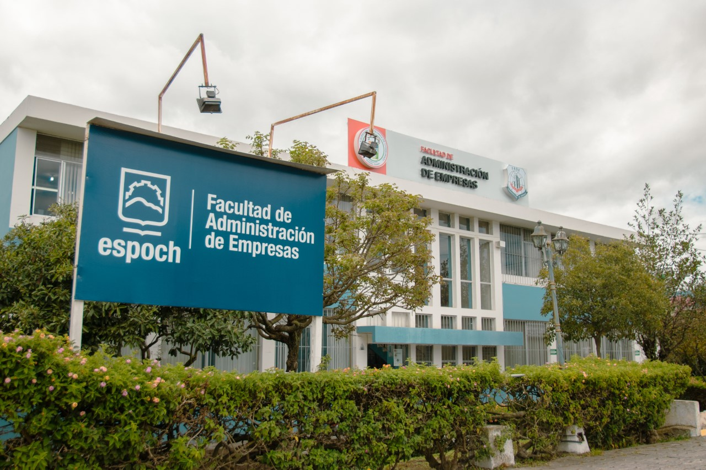

Misión, Visión y Política de Calidad FADE
Misión
Somos una Unidad Académica de educación superior que forma profesionales en ciencias administrativas, con capacidad emprendedora e innovadora, con formación humanística y científica bajo estándares de calidad en cumplimiento de sus funciones sustantivas que contribuyan a enfrentar los cambios del desarrollo socioeconómico y sustentable del país en el marco de los nuevos retos que impone la sociedad.
Visión
Ser el referente nacional en el desarrollo efectivo de las funciones sustantivas de la educación superior, en las Ciencias Administrativas, alcanzando estándares internacionales de calidad, con libertad, respeto, transparencia, confiabilidad y responsabilidad social.
Política de Calidad
ALa Facultad de Administración de Empresas es una unidad académica que brinda servicios de educación superior, en cumplimiento con el marco legal vigente, considera a la gestión de la calidad como un factor estratégico para satisfacer las necesidades y cumplir con las expectativas de la sociedad, mediante la gestión eficiente de sus recursos y la eficacia de sus procesos de docencia, vinculación, investigación y gestión, bajo un enfoque en el cliente, mejora continua y gestión de riesgos, a fin de formar profesionales competentes capaces de insertarse en el campo laboral, prestando sus conocimientos y habilidades al sector productivo o generando emprendimientos. Esto permitirá cumplir con los requisitos legales y los objetivos de calidad propuestos.
Apartado 2
Contenido del segundo apartado...
Apartado 3
Contenido del tercer apartado...
Apartado 4
Contenido del cuarto apartado...